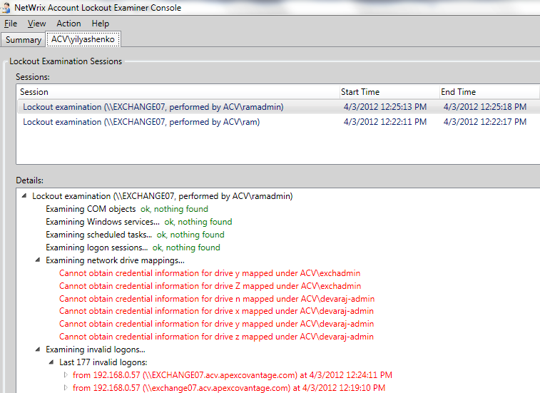

The following error is returned on account lockout examination: "Cannot obtain credential
information for drive <> mapped by <>"

This error means that there are mapped drives in the system, but NetWrix Account Lockout Examiner for some reason cannot read the information on the credentials used to map drives in the Windows registry of the examined machine. This error usually occurs when the user under whose account a drive is mapped, used their own credentials, or a drive is mapped each time a user logs on with the current crendeitals.
This error means that there are mapped drives in the system, but NetWrix Account Lockout Examiner for some reason cannot read the information on the credentials used to map drives in the Windows registry of the examined machine. This error usually occurs when the user under whose account a drive is mapped, used their own credentials, or a drive is mapped each time a user logs on with the current crendeitals.